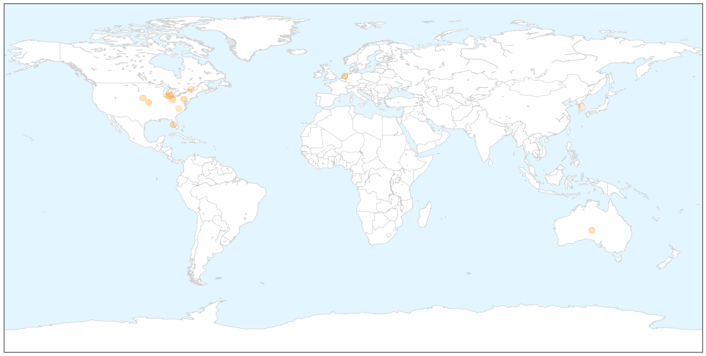
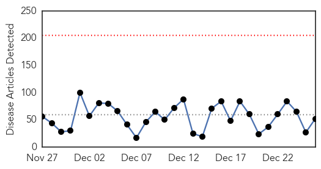
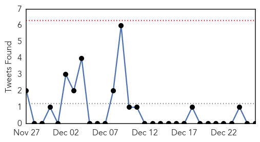
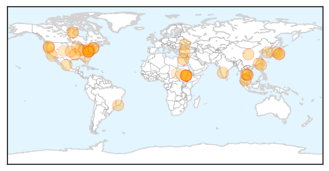
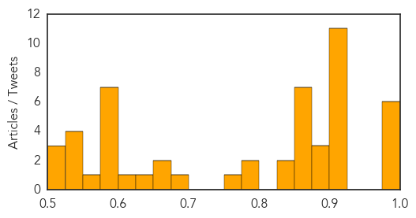

Influenza
30-Day Web Trend
1 alerts, 0 warnings

30-Day Twitter Trend
6 alerts, 0 warnings

Article Locations

X

Article Confidences

Top Articles:
- 0.998
- Flu widespread across Ohio
- 0.996
- Flu season hitting fast, hard
- 0.995
- Serious flu strain sweeping through Jackson County, more than 1,000 cases in December
- 0.993
- Flu numbers rising in Lee, declining in Collier â for now
- 0.993
- Hundreds of flu cases reported in Lehigh Valley; officials say virus is widespread statewide
- 0.986
- Deadly new “Bourbon virus” doesn't come from whiskey
- 0.972
- NIH Resumes MERS Flu Studies
- 0.966
- Flu Protection Measures
- 0.950
- Frail Seniors Fare Better with High-Dose Flu Vaccine
- 0.935
- How To Figure Out If You Have A Cold, A Flu, Or Allergies
- 0.785
- Get Added Protection Against H3N2 with A.Vogel's Clinically Proven Echinaforce® - News Press Release
- 0.741
- Hospital Visitor Restrictions
- 0.692
- State Continues Stressing Flu Shots
- 0.618
- Washington steps up testing for bird flu in the wild
Top Tweets:
-
No tweets found for Dec 26, 2014
Unknown
30-Day Web Trend
0 alerts, 0 warnings

30-Day Twitter Trend
0 alerts, 0 warnings

Article Locations

Article Confidences
Top Articles:
- 0.994
- Flu skyrockets just in time for holidays; 11 deaths so far
- 0.994
- Flu season hits hard in the Mid-South
- 0.991
- Beebe Healthcare revises visitor policy as flu increases
- 0.989
- Dept. of Health urges Whidbey residents to get flu vaccine
- 0.987
- Kenya : Tenth Egyptian dies of H5N1 bird flu
- 0.987
- Got the Flu? When to head to the doctor
- 0.920
- Many Citizens Unaware of Encephalitis Docs
- 0.917
- Chicago Tribune
- 0.917
- Chicago Tribune
- 0.917
- Chicago Tribune
- 0.917
- Chicago Tribune
- 0.917
- Chicago Tribune
- 0.917
- Chicago Tribune
- 0.917
- Chicago Tribune
- 0.917
- Chicago Tribune
- 0.917
- Chicago Tribune
- 0.917
- Chicago Tribune
- 0.894
- HMC Expert says Good Hygiene is Key to Preventing Spread of Contagious Diseases
- 0.892
- CDC: “Contagious illness on the rise in Indiana”
- 0.879
- Hometownstations.com-WLIO- Lima, OH News Weather Sports
- 0.866
- 'Doc with dirty needles infected 119 with HIV', Others news, Health News, AsiaOne YourHealth
- 0.866
- (OFFICIAL)-Islamic State targeted in 39 strikes by U.S., allies -Task Force
- 0.866
- Kosovo police arrests terrorism suspect
- 0.866
- Ukraine to suspend all trains to Crimea over security concerns
- 0.850
- U.S. News
- 0.850
- U.S. News
- 0.850
- U.S. News
- 0.848
- Thailand: Health teams sent to assist locals in flood-ravaged South
- 0.843
- Health officials recall caramel apples linked to deadly U.S. listeriosis outbrea
- 0.786
- Cambodian HIV outbreak grows as migrant workers return for tests
- 0.784
- Poultry producers brace for bird flu fallout
- 0.769
- Northwest US poultry producers brace for bird flu fallout
- 0.682
- Those Delicious Holiday Caramel Apples Are Going to Ruin Your Insides
- 0.673
- Deaths Linked to Listeria-Contaminated Caramel Apples
- 0.672
- Five die, 29 Californians sickened linked to caramel apples
- 0.645
- Unlicensed doc infects 119 with HIV in cambodia
- 0.622
- Study finds 'free' health care DOES improve health outcomes
- 0.600
- Editorial: Harsh medicine for Georgia hospitals
- 0.593
- Sickweather app finds Texas one of the snottiest, sickest states
- 0.586
- Sudan expels 2 senior UN officials
- 0.584
- Sudan orders senior UN officials to leave
- 0.580
- Middle East Online
- 0.578
- 160 villagers infected with HIV in northwest Cambodia
- 0.576
- Sudan orders senior UN officials to leave
- 0.572
- Khartoum expels senior UN figures
- 0.549
- California officials issue caramel apple warning
- 0.548
- Senior UN Officials In Sudan Asked To Leave
- 0.527
- Sudan orders senior UN officials to leave
- 0.526
- Senior UN officials in Sudan asked to leave
- 0.523
- Senior UN officials in #Sudan asked to leave
Showing top 50 articles...
Top Tweets:
-
No tweets found for Dec 26, 2014